Each scenario includes a quick brief and an expandable playbook. Start with prevention, act decisively during the event, then capture lessons learned to upgrade your kit and skills. Cross-links point to deeper guides where the science and drills live.
EMT & Field Care
Scenario 1: Shock in the Field
Situation: Major laceration; rapid pulse, clammy skin, anxiety—still talking.
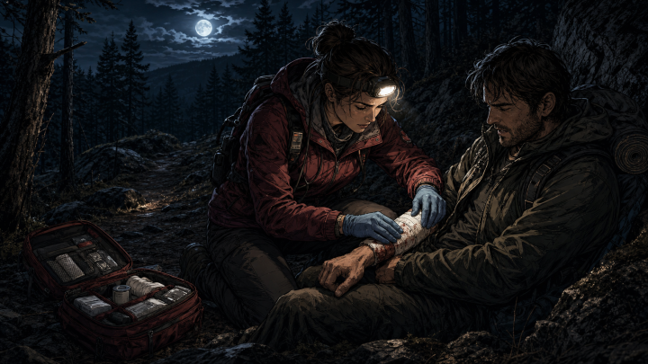
Control the bleed
Playbook — Before / During / After
Before: Carry pressure dressings, tourniquet, space blanket; rehearse MARCH : Massive bleeding ? Airway ? Respiration ? Circulation ? Hypothermia.During: Direct pressure; tourniquet if needed; keep patient supine, elevate legs if tolerated; prevent heat loss; monitor mental status.After: Mark TQ time, reassess every 5–10 min, plan evacuation. Log what worked and what ran out.
Deep dive: Shock Recognition & Field Management
Scenario 2: Fracture & Splinting Under Stress
Situation: Mid-shaft tib/fib deformity; severe pain on movement.
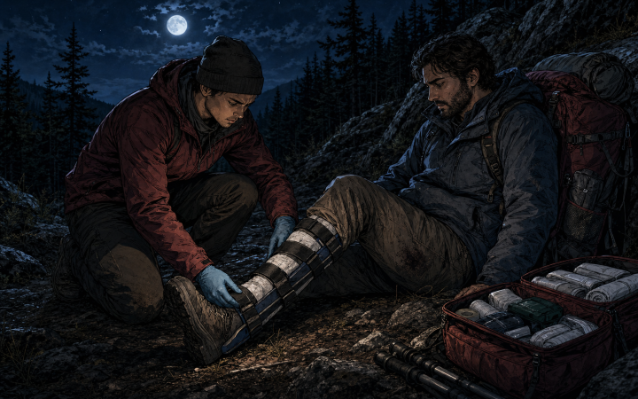
Immobilize and recheck
Playbook
Before: Pack SAM splint, padding, triangle bandage, tape; practice distal CSM checks.During: Immobilize joint above/below; pad bony points; secure evenly; recheck CSM; analgesia per protocols.After: Minimize movement, insulate, plan litter or assisted evac; document.
See also: EMT Kit Basics
Scenario 3: Hypothermia After Immersion
Situation: Kayaker pulled from 42 °F water; violent shivering, weak pulse.
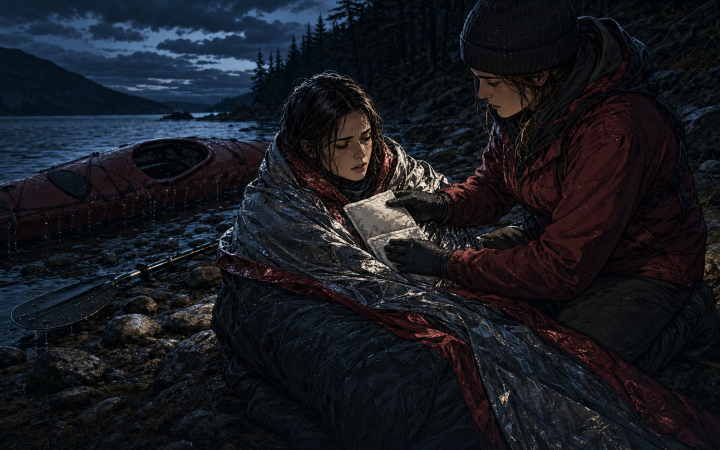
Dry, insulate, monitor
Playbook
Before: Dry bag with spare base layer, emergency bivy, heat packs; rehearse rewarming steps.During: Strip wet layers, dry & insulate; heat to chest/axillae; warm fluids if alert; monitor; avoid aggressive limb massage.After: Keep horizontal during transport; watch for afterdrop; log temperature and timeline.
Deep dive: Hypothermia & Heat Retention 101
Scenario 4: Field Tourniquet Mistake
Situation: Commercial TQ applied but bleeding persists; distal pulse present.
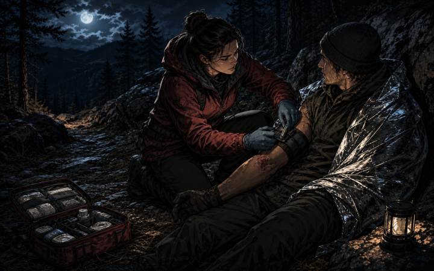
Tighten, mark, evacuate
Playbook
Before: Train with your specific TQ; stage it for one-handed use.During: Tighten until bleeding stops ; no distal pulse; secure windlass; mark time; address hypothermia.After: Monitor for re-bleed; reassess every few minutes; plan rapid transport.
Start here: EMT Kit Guide
Scenario 5: Severe Allergy / Anaphylaxis
Situation: Rapid hives, wheeze, swelling of lips/tongue after a sting or food.
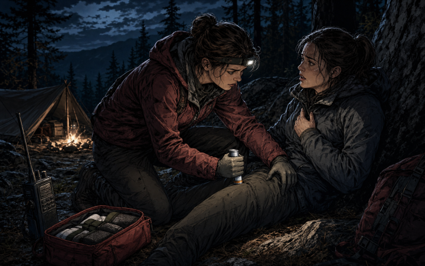
Epinephrine, then evacuate
Playbook
Before: Carry Epi auto-injector if allergic; antihistamine; know local EMS access.During: Administer epinephrine to mid-thigh; call for evac; monitor airway/breathing; second dose if symptoms persist per protocol.After: Observe for biphasic reaction; document time/dose; replace used kit.
Related: EMT Kit Basics · Shock Recognition
Scenario 6: Head Injury with Altered Mentation
Situation: Fall on rock; brief loss of consciousness; confusion, headache, nausea.
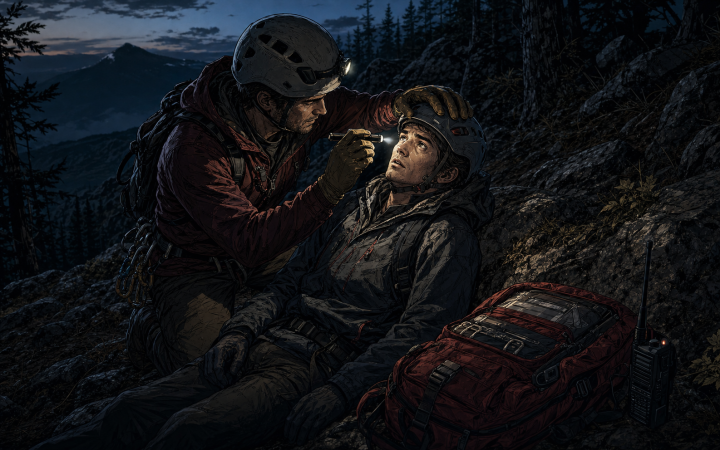
Protect, assess, evacuate
Playbook
Before: Helmets for scrambling/cycling; carry light & emesis bag; know concussion red flags.During: ABCs; C-spine precautions if indicated; monitor GCS; light rest; avoid NSAIDs initially; plan evac if worsening.After: 24–48 h cognitive rest; graded return to activity; document symptoms timeline.
Related: EMT Kit · Heat Retention (for shock risk)
Treasure & Recovery
Scenario 7: Lost Signal on a Valuable Target
Situation: Clean high-tone vanishes after one scoop on wet sand.
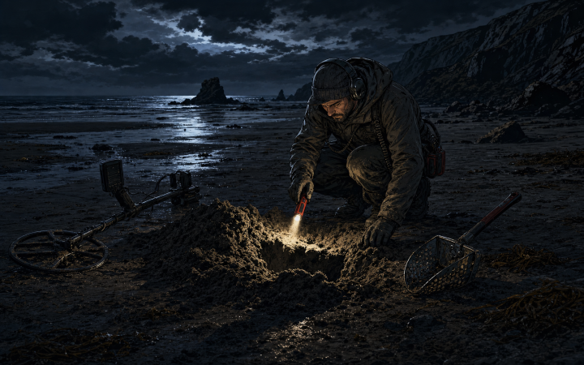
Rescan the spoil
Playbook
Before: Calibrate ground balance; carry a pinpointer; practice grid discipline.During: Re-scan spoil pile; reduce sensitivity; cross-sweep at 90°; use pinpointer in hole and scoop.After: Note tide/soil conditions and settings that worked; update a field card.
Deep dive: Treasure Tools & Recovery Basics
Scenario 8: Iron Masking a Good Target
Situation: Iron grunts everywhere; high tone only at one sweep angle.
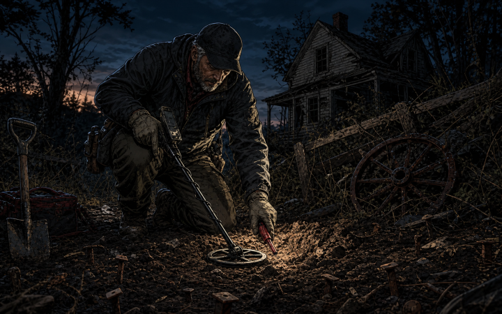
Cross-sweep the signal
Playbook
Before: Learn machine’s iron bias & recovery speed; small coil for trashy sites.During: Cross-sweep 90°; slow down; bump recovery speed; “wiggle” over high-tone edge; isolate with handheld pinpointer.After: Log settings that unmasked target; map hot patches for a return pass.
Deep dive: Treasure Tools & Recovery Basics
Scenario 9: Fragile Find Crumbles on Extraction
Situation: Corroded coin/button flakes apart on contact.
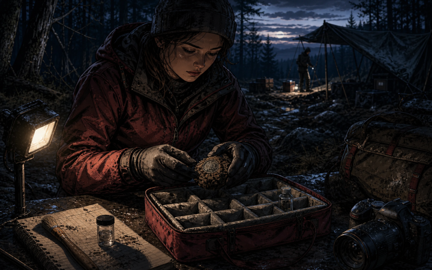
Lift the soil puck
Playbook
Before: Carry small vials, coin flips, soft brush; avoid harsh cleaning in field.During: Lift with soil “puck” intact; place in container; keep dry & cushioned; photograph in situ.After: Gentle desalination (if marine) under guidance; avoid abrasives; tag context & GPS.
See: Recovery Workflow
Firecraft
Scenario 10: Fire Dies at Ignition
Situation: Tinder flares then snuffs out on damp ground or snow.
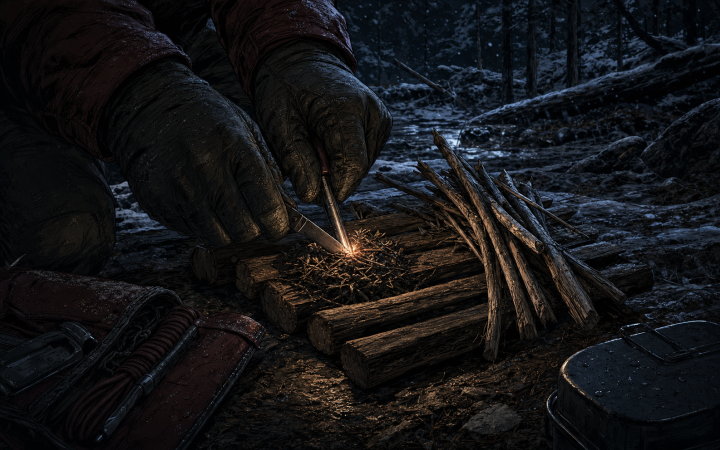
Build above the wet
Playbook
Before: Stage fatwood curls/fines; pre-build a twig platform; pack windscreen.During: Raise the platform; concentrate sparks within 1 cm; transition early to pencil sticks.After: Time your ignition and boil tests; tune fuel sizing and draft gaps.
Learn the why: Cold-Weather Firecraft · Fire Readiness 101
Scenario 11: Everything Is Wet After Days of Rain
Situation: No dry twigs; tinder sodden; wind gusting.
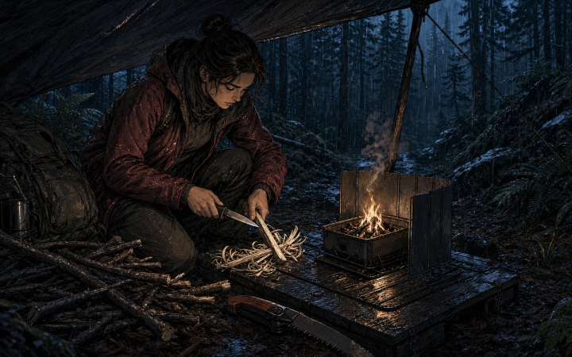
Split to dry heartwood
Playbook
Before: Pack waxed cotton/jute, resin sticks, storm matches; carry folding saw.During: Limb dead branches off live trees; split sticks to dry heartwood; build raised platform; create feather sticks; shield with windscreen.After: Dry surplus kindling near flame (safe distance) for next ignition.
Related: Cold-Weather Firecraft · Fire Readiness 101
Scenario 12: Stove Fails at Altitude in Cold
Situation: Canister stove sputters; water won’t boil at 10,000 ft and 20 °F.
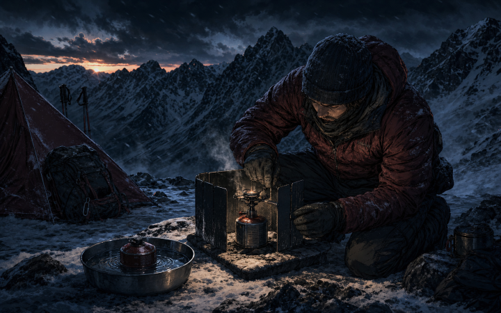
Warm fuel safely
Playbook
Before: Use four-season mix canisters; bring stove base & windscreen; pack matches/ferro as backup.During: Warm canister (body heat/water bath, not open flame); use windscreen; insulate stove from snow; consider liquid fuel backup.After: Note fuel performance vs temps/altitude; adjust cook plan and boil volumes.
See also: Stove Safety & Draft
Hiking & Mobility
Scenario 13: Overloaded Pack & Socket Shear
Situation: 72-hour load causes prosthetic discomfort and gait fatigue.
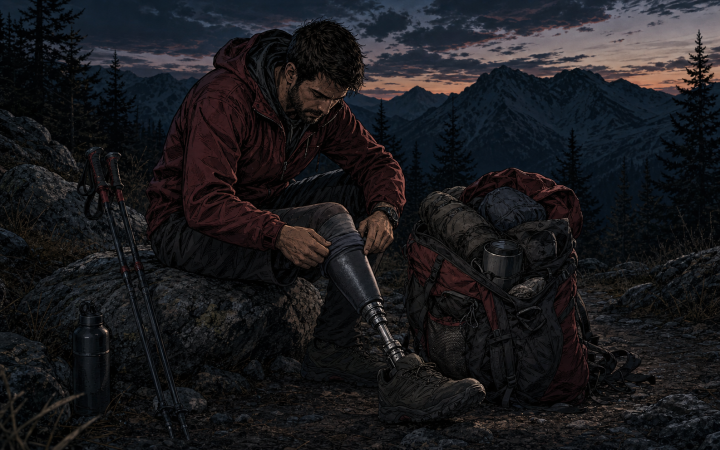
Rebalance the load
Playbook
Before: Map load near spine; compress evenly; tune strap geometry.During: Lower center of gravity; rebalance dense items; micro-adjust hip/shoulder ratio.After: Note hotspots and stride data; re-pack for next day; consider lighter cook kit/water plan.
Technique: 72-Hour Pack Load Balance
Scenario 14: Lost Trail at Dusk
Situation: Cloud cover hides the sun; GPS dies; trail faint.
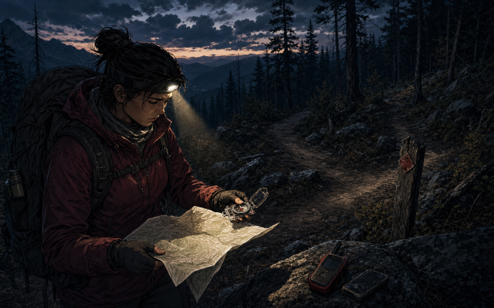
Stop, orient, plan
Playbook
Before: Carry a paper map, baseplate compass, headlamp, and spare battery; practice terrain association and taking a bearing. For remote routes, activate and test a satellite communicator before departure.During: Stop; mark last known good; use handrails (ridges, streams); move to open ground.After: Debrief route choice; adjust battery policy and dusk turn-around times.
Travel systems: Vagabonding Essentials
Scenario 15: Blister Forms Mid-Hike
Situation: Hot spot evolves into fluid blister; stride compensation starts.
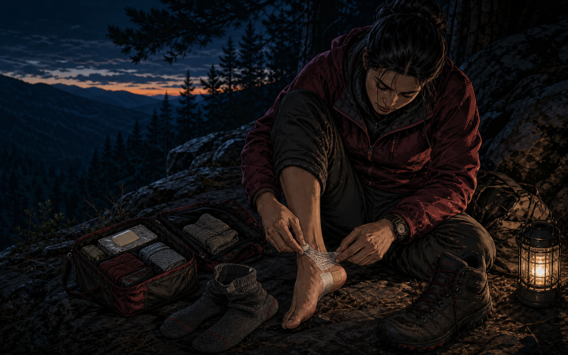
Treat the hotspot early
Playbook
Before: Pre-tape known hotspots; fit socks (liner + outer); trim nails.During: Stop early; drain with sterile lancet at edge; apply hydrocolloid or tape donut; tighten lacing to lock heel; reduce day’s mileage.After: Air at camp; rotate socks; review lacing pattern & insole support.
Related: Vagabond Essentials · Load Balance
Scenario 16: Knee Pain on Descents (IT Band/Patellofemoral)
Situation: Anterior or lateral knee pain increases on steep downhill with pack.
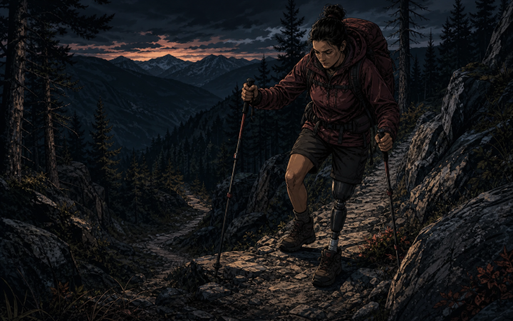
Shorten, stabilize, descend
Playbook
Before: Trekking poles; strengthen glutes/quads; shorten stride; pack weight close to spine.During: Use poles actively; micro-switchback steep sections; tighten hip belt; reduce step length; consider knee sleeve/tape.After: Mobility drills; redistribute weight; evaluate shoe drop/cushion.
Technique: Pack Geometry
Suggest a Scenario
Medical, firecraft, hiking, or recovery — send your field problem and we’ll publish the fix.
Submit Scenario ?
Related: All Guides